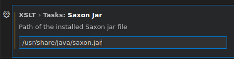

Здесь записывается, как пользоваться XSLT-транслятором Saxon в IDE VSCode.
Создание Workspace
Для того, чтобы полноценно пользоваться XSLT-транслятором необходимо, чтобы в VSCode был создан Workspace, а не просто был открыт какой-то XML-файл на редактирование. Проще всего создать Workspace можно следующим образом:
1. Оставить открытыми только те файлы, которые будут использоваться в Workspace. Обычно для задачи XSLT-трансляции это XML-файлы, которые лежат в каком-то каталоге.
2. В меню выбрать File - Save Workspace As... и сохранить Workspace в файл, указав директорию, где лежат XML-файлы. После этого действия в директории появится файл с расширением *.code-workspace. Имя файла - это и будет имя Workspace. Например, если сохранен файл как xslt_translate.code-workspace , то имя Workspace будет считаться как xslt_translate, а в интерфейсе такой Workspace будет отображаться как XSLT_TRANSLATE (WORKSPACE).
Файл с расширением *.code-workspace - это текстовый файл в формате JSON, и его содержимое будет примерно следующим:
{
"folders": [
{
"path": "."
}
],
"settings": {}
}
Если содержимое не такое, например присутствуют ненужные каталоги, то можно их убрать. Для этого надо в в области EXPLORER (левая вертикальная область в GUI VSCode) распахнуть раздел с именем только что созданного рабочего пространства XSLT_TRANSLATE (WORKSPACE), и выбрав лишний каталог по правой кнопке мыши, можно выбрать действие Remove Folder From Workspace.
После того как создано Workspace и оно активно, можно дальше начинать настройку.
Установка расширений для работы с XML и XSLT
Чтобы работать в VSCode с инструментами XML и XSLT, надо установить расширения:
После установки, эти расширения ставятся частью всего VSCode, а не только текущего Workspace.
Установка JAVA
Так как транслятор Saxon написан на Java, то для его исполнения необходимо, чтобы на компьютере стояла среда исполнения Java.
В Linux это можно сделать путем установки пакета java-common.
В Windows установить Java OpenJDK можно с сайта:
https://adoptopenjdk.net/installation.html
Установка XSLT процессора Saxon
Под Linux утилиту Saxon можно установить из стандартных репозитариев. В Debian Linux для этого можно установить:
В обеих случаях, после установки надо заглянуть в информацию о пакете и посмотреть, куда был установлен jar-файл с процессором Saxon. Скорее всего, это будет следующий путь:
/usr/share/java/saxon.jar
или
/usr/share/java/Saxon-HE.jar
Пользователи Windows могут попробовать установить Saxon отсюда:
https://sourceforge.net/projects/saxon/files/Saxon-HE/10/Java/
После установки, так же как и в случае с Linux, нужно запомнить полный путь к jar-файлу.
Создание задачи для запуска транслятора Saxon
Чтобы пользоваться Saxon в VSCode, необходимо создать задачу, которую можно будет вызывать в GUI VSCode. Если Workspace новое, то в нем не настроено еще ни одной задачи. Для настройки задачи запуска Saxon, надо в меню выбрать:
Terminal -> Configure Tasks
И далее в списке выбрать xslt: Saxon Transform (New). В результате в каталоге, где лежит файл xslt_translate.code-workspace будет создан подкаталог .vscode а в нем создан файл tasks.json. В этом файле будет лежать первично сконфигурированная задача для запуска Saxon:
{
"type": "xslt",
"label": "xslt: Saxon Transform (New)",
"saxonJar": "${config:XSLT.tasks.saxonJar}",
"xsltFile": "${command:xslt-xpath.pickXsltFile}",
"xmlSource": "${command:xslt-xpath.pickXmlSourceFile}",
"resultPath": "${workspaceFolder}/xsl-out/result1.xml",
"allowSyntaxExtensions40": "off",
"messageEscaping": "adaptive",
"group": {
"kind": "build"
},
"problemMatcher": [
"$saxon-xslt"
]
}
Здесь видно, что местоположение jar-файла с транслятором Saxon задается из конфигурационной переменной ${config:XSLT.tasks.saxonJar}. Чтобы задать это значение, надо в меню выбрать:
File - Preferences - Settings
В открывшемся окне в строке поиска надо набрать xslt. И далее надо выбрать пункт XSLT > Tasks: Saxon Jar в которм надо ввести полный путь к jar-файлу, который был запомнен ранее:

Данная настройка сохранится в пользовательских настройках среды IDE VSCode. Ее не будет видно ни в файле Workspace, ни в файле tasks.json, но она будет влиять на выполнение задачи.
Далее, чтобы не запутаться, разработчики рекомендуют открыть файл task.json, выбрав его в области EXPLORER, и путем редактирования JSON-кода изменить значение label на любое другое удобное. Это необходимо сделать из-за того, что предполагается, что задач для XSLT-трансляции может потребоваться несколько штук.
Далее надо код:
"group": {
"kind": "build"
},
Заменить на:
"group": {
"kind": "build",
"isDefault": true
},
Таким образом, по-умолчанию, данная задача будет запускаться при запуске команды сборки:
Terminal - Run Build Task... (или Ctrl + Shift +B)
Если внимательно посмотреть, то можно увидеть, что в задаче чрез команды xslt-xpath.pickXsltFile и xslt-xpath.pickXmlSourceFile запрашиваются XSLT и XSL файлы:
...
"xsltFile": "${command:xslt-xpath.pickXsltFile}",
"xmlSource": "${command:xslt-xpath.pickXmlSourceFile}",
"resultPath": "${workspaceFolder}/xsl-out/result1.xml",
...
Это значит, что в момент запуска задачи XSLT-трансляции (клавишами Ctrl + Shift +B), будет появляться диалог для выбра XSLT-файла, а затем для выбора XML-файла. А результат трансляции будет укладываться в файл /xsl-out/result1.xml в каталоге Workspace.
Запуск задачи XSLT-трансформации через Saxon
Чтобы запустить транслятор Saxon, можно, находясь в любом файле, нажать Ctrl + Shift + B. Далее надо последовательно выбрать XSLT и XML файл. в результате трансляция будет запущена.
При выполнении трансляции возможно появляение следующей ошибки:
Error: Could not find or load main class net.sf.saxon.Transform
Caused by: java.lang.ClassNotFoundException: net.sf.saxon.Transform
Появление этой ошибки связано с тем, что трансформер Saxon в какой-то период времени стал сильно перерабатываться. В VSCode формируется следующая команда
Вот так просто и непринужденно можно пользоваться XSLT-транслятором в VSCode.